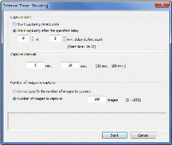

Shooting a still image
The operation panel of the Remote Camera Control window allows you to control a camera connected via USB to your PC and shoot a still image remotely. The image shot is automatically saved in the specified PC folder with a specified file format. You can also start Image Data Converter and display the captured image.
| 1 |
Check to see that the camera settings are loaded in the operation panel.

If the camera settings are not displayed
Check to see if the camera is properly connected.
To change the shooting settings on the display panel
Click the item that you want to change and then click to increase or decrease the value.
|
|---|---|
| 2 | Fix the focus, exposure, and the amount of flash luminescence as necessary.
When you cannot focus
In auto focus mode, you cannot shoot a still image without focusing. If you cannot focus in auto focus mode, use the manual focus mode. |
| 3 |
Click (the shutter button).
An image is shot. The shot image is automatically saved in the PC folder with the file format and in the image size that were specified in the setup panel. |
Notes
- To save an image, you need 100 MB or more free disk space.
- If an image cannot be saved with self-timer or other operations, the focus may not be fixed. If this occurs, use the AFL or manual focus mode to shoot an image.
Performing interval timer shooting
You can perform interval timer shooting by specifying the capture start time, capture interval, and number of times to capture.
| 1 |
Click .
The [Interval Timer Shooting] window is displayed. |
||||||
|---|---|---|---|---|---|---|---|
| 2 | Specify the capture start time and capture settings to perform interval shooting.

|
||||||
| 3 |
After settings are complete, click [Start].
|
Notes
- In the interval shooting mode, the drive mode is fixed to [Single-Shot Adv.].
- The shutter cannot be released when the subject is out of focus except when the manual focus mode is selected or [Release] is selected in the [Priority setup] option of the recording menu.